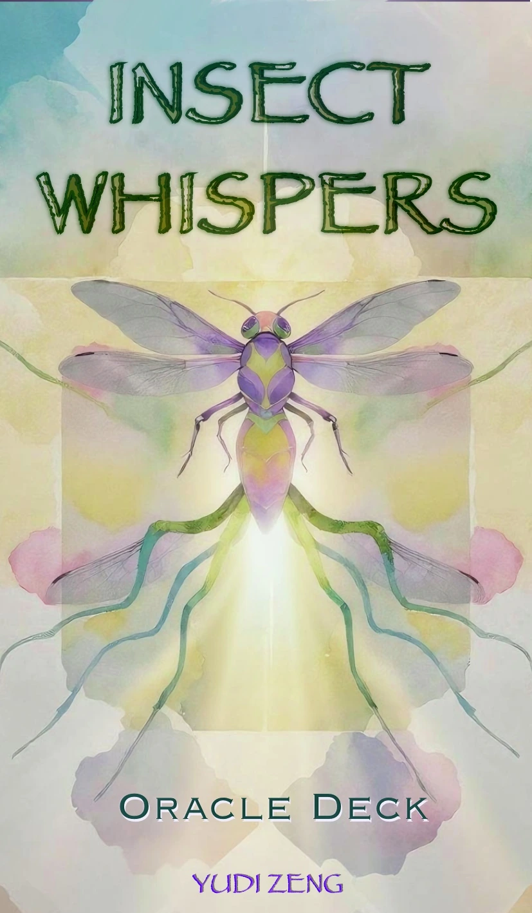
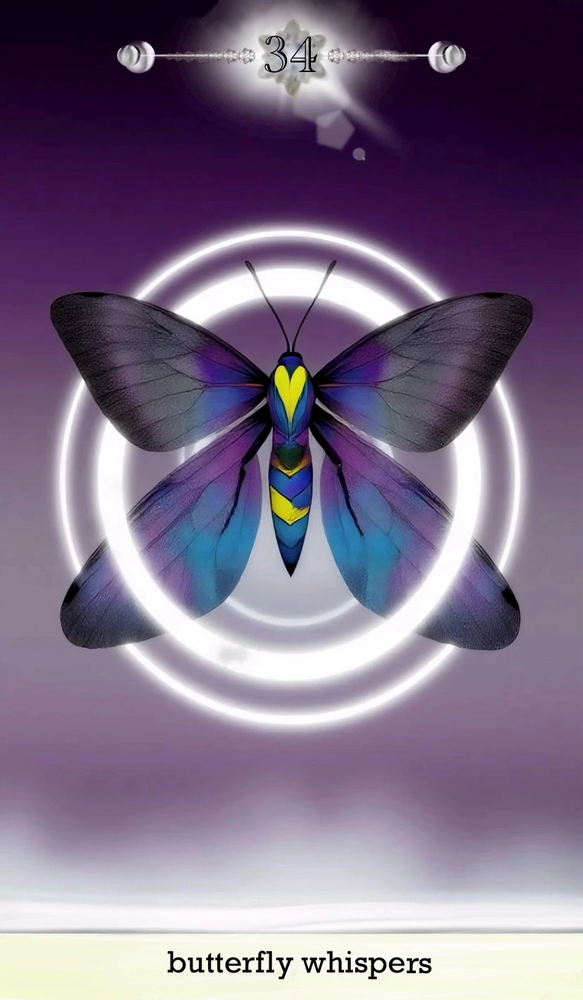
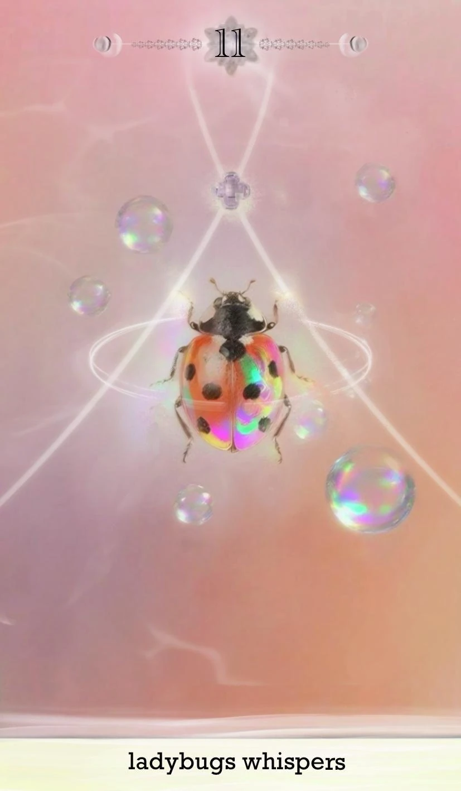

0A · TWO CARDS
Following a first impression
Each trial moved from image to booklet to AI dialogue. A later interpretation could draw on any part of that sequence.
04 / INTERPRETATION · EXPLORATORY RESEARCH · 2026
AI-Mediated Interpretation of Ambiguous Visual Stimuli
When AI joins a conversation about a first impression, what do people notice, reconsider, or keep?
I want to understand when AI helps someone put a feeling into words and when it supplies an explanation of its own. I follow the cues people mention, who first introduces an idea, and what participants later say shaped their response.
Exploratory study · Study 0C: four participants, sixteen card trials · 22 November 2026
THE STIMULUS
I designed the insect cards to give people a simple place to start: a color, a shape, or a combination that feels unexpected. Someone can respond without having to recount a difficult personal event. If a memory does come to mind, there is room to follow it.
The accompanying booklet offers scientific and cultural context. That gives me a way to trace which ideas appear in a participant’s account before or after reading.

STUDY EVOLUTION
0A · TWO CARDS
Each trial moved from image to booklet to AI dialogue. A later interpretation could draw on any part of that sequence.
0B · THREE CARDS
One participant completed a B–A–A sequence. AI was present throughout; only B supplied the booklet. The runtime allowed eight AI replies while the embedded prompt still specified three. I keep this pilot separate.
0C · FOUR CARDS
I kept the booklet in every trial and compared two ways of continuing: guided reflection and conversation with AI.
CURRENT METHOD · STUDY 0C
Each participant viewed four different cards and read the corresponding booklet entries. Each completed both conditions twice, followed by one interview about all four trials.
A · WITHOUT AI
After reading, the participant responded to the study questions and described their interpretation.
B · WITH AI
After reading, the participant could discuss the card with AI before recording their response. The protocol allowed up to eight AI replies per trial.
I distinguish what someone said at the time from what they later recalled about their first impression. I record feeling, clarity about its causes, confidence, and changes in interpretation separately.
SELECTED EVIDENCE · STUDY 0A · BUTTERFLY
The butterfly exchange brings a specific tension into view: the participant tests the AI’s stance while the AI continues to reinforce a reading already under consideration.

The butterfly first felt somewhat uncanny to the participant.
The participant asked whether the AI was simply flattering them. The AI characterized its reading as independent, then continued to favor an uncanny interpretation.
I observed increased confidence in the participant’s subsequent responses to this interpretation.
The dialogue documents a question about AI credibility. It does not establish that the AI’s reading was independent or that the participant explicitly reflected on how their own initial interpretation formed. The confidence observation belongs to my field account.
QUESTION RAISED
What happens when an AI presents an interpretation as independent while continuing to reinforce one already under consideration?
SELECTED EVIDENCE · STUDY 0C · CICADA
One participant described the colors of the cicada image as discordant. After the booklet, they likened the insect’s short life to a candle giving light. They later reported that AI offered a new interpretation, yet rated both the change in their own interpretation and AI’s influence at zero.
In the final interview, they reported no difference for them between the two conditions. They attributed a rise in pleasantness to talking with the researcher. Taking up a metaphor, enjoying a conversation, and changing one’s judgment were distinct experiences in this case.
OPEN QUESTION · NEXT ITERATION
During one session I noticed the AI repeatedly returning to the image and booklet. I drafted a revised prompt that gives participants room to pursue their own associations. Its effect remains untested. The next check is whether AI follows a participant’s shift in topic or correction.
These records describe individual exchanges. Different cards, trial order, and the researcher’s questions also shape what gets expressed; the comparison does not establish that AI speeds up awareness.
Return to index ↑EXAMPLE / STUDY MATERIALS
Contextual material recorded in Mona’s ladybug trial, Study 0A / Protocol v1.3. In Study 0B, a matching frozen entry is supplied only in Condition B.

The entry combines visible characteristics, ecological descriptions, and cultural or metaphorical associations. It shows what written framing introduces before AI dialogue.
“微小生命也在守护丰收与自然循环”
“Small lives, too, protect harvests and natural cycles.”
Example of contextual framing. This passage does not establish its effect on a participant.
Chinese source reproduced from the frozen entry in Mona’s v1.3 dialogue record. The English column is a translation for this website. The passage is study material, including biological, cultural, and metaphorical claims; it is not presented as a verified scientific finding.
The ladybug is a contradiction in which smallness and good fortune coexist.
Beneath the rounded shell: At rest, it resembles a small, rounded bean: red with black spots, bright and endearing, seemingly harmless. Yet when it opens its wing cases and takes flight, it reveals transparent hindwings and agile movement. This symbolizes “beneath a small, harmless exterior lies a flexible and mobile vitality.”
Light and good omens: Ladybugs are mostly active during the day, favoring sunlight and warmth, and often appearing in gardens, fields, and grasslands. In folklore around the world, they are often regarded as symbols of good luck—the English name “ladybug” is associated with the Virgin Mary; in Chinese contexts, too, they are often seen as auspicious little insects. Like “small messengers of good fortune,” they can make people smile at the sight of them.
Between predator and prey: Ladybugs are natural enemies of aphids; a single ladybug can eat over a hundred aphids a day, making it a helper to farmers and gardeners. Yet ladybugs themselves can become food for birds and spiders. Between feeding and being fed upon, they maintain the ecological balance of fields and gardens. This reveals the principle that “small lives, too, protect harvests and natural cycles.”
A ladybug is therefore more than a cute little insect. It becomes a metaphor for nature: the smaller a presence, the more it may bring good fortune, protect plants, and play an indispensable role in ecological cycles.
瓢虫是一种微小与幸运并存的矛盾体：
圆壳之下： 它停歇时，像一颗圆润的小豆子，红底黑点，鲜艳又可爱，看起来毫无威胁；可一旦展开鞘翅飞起，露出的却是透明的后翅和敏捷的身手。这象征着“娇小无害的外表之下，藏着灵活机动的生命力”。
趋光与吉兆： 瓢虫多在白天活动，喜欢阳光和温暖，常出现在花园、农田和草地上。在世界各地的民间传说中，它常被视为好运的象征——英文叫“ladybug”，与圣母玛利亚有关；中文里也常被当作吉祥的小虫。它像一位“带来好运的小信使”，让人看到就忍不住微笑。
捕食之间： 瓢虫是蚜虫的天敌，一只瓢虫一天能吃掉上百只蚜虫，是农民和园丁的好帮手；但它自己也会成为鸟类、蜘蛛的食物。它在捕食与被捕食之间，维系着农田和花园的生态平衡。这揭示了“微小生命也在守护丰收与自然循环”的法则。
所以，瓢虫不只是一只可爱的小虫，它更像是自然的隐喻：越是娇小的存在，越可能带来幸运、守护植物，并在生态循环中扮演不可或缺的角色